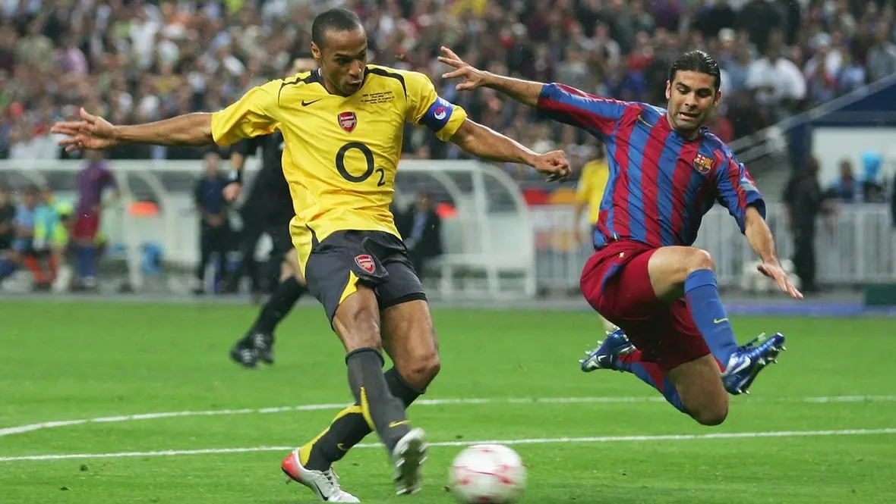
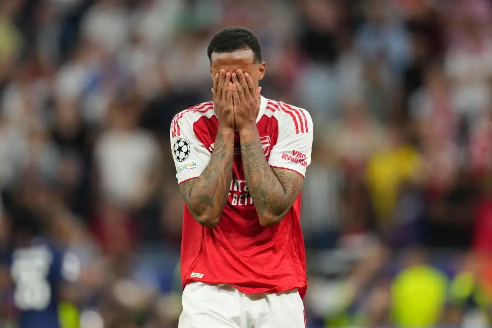

Hy Vọng · Arsenal · Budapest
Đây không phải
là kết thúc.
Hai mươi năm sau Paris, một thế hệ khác bước tới ngưỡng cửa lịch sử ở Budapest, rồi lại học cách sống cùng một nỗi đau rất Arsenal.
Hai mươi năm trước, hành trình vào chung kết của Arsenal là hoàng hôn của một thế hệ, là năm cuối cùng ở Highbury, là mùa giải cuối cùng của “Người Hà Lan bay” Dennis Bergkamp, là lần cuối cùng Henry thật sự cháy hết mình trước khi bị chấn thương hành hạ, là những tiếc nuối và nỗi niềm chưa thể nguôi ngoai. Nếu như Lehmann không bị truất quyền thi đấu, nếu như Arsenal trụ vững thêm mười lăm phút nữa, nếu như Eto’o không ghi bàn, và muôn vàn câu hỏi “nếu như” khác. Suy cho cùng, chúng ta không thể thay đổi những thứ đã diễn ra, nhưng lần này, chúng ta có thể viết nên lịch sử.

Lần này, Arsenal tới với trận chung kết như bình minh của một thế hệ mới, với trung tâm là những chiến binh dù tuổi đời còn trẻ nhưng đã kinh qua bao nhiêu trận chiến, mang trên mình đủ loại vết thương và sẵn sàng chết cho màu áo này. Trước trận đấu, Lehmann, người bị thẻ đỏ năm xưa, dặn dò Raya rất kỹ rằng hãy cháy hết mình nhưng vẫn giữ cái đầu lạnh. Henry, giờ ngồi trên khán đài, vẫn bảo vệ và đặt niềm tin tuyệt đối vào màu áo đỏ anh yêu. Bố Wenger, vẫn với bộ vest lịch lãm, vẫn ngồi đó dõi theo đội bóng mà ông đã, đang và sẽ gắn bó gần như cả cuộc đời mình. Tất cả mọi thứ đã sẵn sàng.
Một trăm hai mươi phút dài đằng đẵng đó, có lúc chúng ta đã cầm chắc chiến thắng trong tay. Chúng ta có một hệ thống phòng ngự quá khoa học, quá chặt chẽ và tưởng chừng như không thể bị vượt qua. Cặp trung vệ chiến binh Saliba và Gabriel đánh bật mọi đường bóng vào vòng cấm, Raya hóa Courtois năm nào, Declan Rice chạy khắp sân với thứ năng lượng bất diệt, Starboy Saka luôn chực chờ tạo cơ hội bất cứ lúc nào, còn Ødegaard chỉ huy tất cả như vua Leonidas đứng giữa 300 chiến binh Sparta. Và khoảnh khắc đó tới, định mệnh gọi tên Kai Havertz, tựa như trận chung kết năm 2021. Tiếng hát lại vang lên: “60 million down the drain. Kai Havertz scores again.” Fan Arsenal ăn mừng như điên dại, còn những người khác lắc đầu ngao ngán vì chuyện này thật khác quá xa những thứ họ tưởng tượng.
Chúng ta đã ở rất gần ngưỡng cửa lịch sử. Nhưng một lần nữa, khi niềm hy vọng của các cổ động viên, những người theo dõi và yêu mến câu lạc bộ này lên tới đỉnh điểm, định mệnh lại trêu đùa chúng ta. Lần này, nó gọi tên Mosquera, một trung vệ hai mươi mốt tuổi, trong mùa đầu tiên thi đấu ở môi trường khắc nghiệt nhất châu Âu, bị kéo ra đá hậu vệ cánh, người mà trước trận đấu đã đứng trong đường hầm, ngẩng mặt lên trời và cầu nguyện với Chúa.
Nhưng Arsenal đã không bỏ cuộc, chúng ta đã chiến đấu tới cùng. Nhìn Hincapié tập tễnh vẫn phải cắn răng đuổi theo các chân chạy cánh đầy tốc độ của PSG, nhìn Gyökeres sau khi vào sân dùng tất cả sức lực để làm công việc của hai, ba người, nhìn Gabriel vẫn hùng hổ chỉ huy hàng thủ, nhìn Timber cố gắng kéo quả bóng lên phía trên. Đây không phải là Arsenal mong manh, dễ vỡ của quá khứ. Những đứa trẻ nhà Emirates bị trêu đùa năm nào đã không xuất hiện tại Budapest. Thay vào đó, giống như William Wallace tại trận Stirling Bridge năm 1297, đây là những kẻ sẵn sàng tử vì nghĩa lớn.
Để rồi sau loạt luân lưu may rủi đó, thứ có thể bẻ gãy tinh thần của ngay cả người can đảm nhất, nữ thần may mắn lại không mỉm cười với chúng ta. Gabriel, người vốn luôn nổi tiếng với hình tượng dữ tợn, tựa như Trương Phi thời Tam Quốc, sau khi thực hiện lượt sút của mình đã bật khóc nức nở, khóc vì sự uất ức, khóc vì những kỳ vọng không thành. Raya, thủ môn xuất sắc nhất mùa giải, người chỉ để thua vì một quả phạt đền, người thậm chí còn cản phá thành công trong loạt sút định mệnh đó, gục xuống sân, nước mắt không ngừng rơi. Chúng ta đã thất bại.

Trống rỗng.
Đó là thứ đầu tiên mình cảm nhận được. Tất cả những tâm tư dồn nén đè nặng lên từng hơi thở. Nó nặng nề vô cùng. Đoạn phim ký ức lại tua trong đầu mình, về mùa giải bất bại đáng lẽ phải có, về từng trận chiến đã qua, chưa từng chịu thua một lần. Để rồi, vào trận đấu quan trọng nhất, chúng ta đã thua, tâm phục khẩu phục.
Nhưng đây là kết thúc của mùa giải, không phải kết thúc của một thế hệ, càng không phải kết thúc của vương triều mà Mikel Arteta đang xây dựng. Đâu đó trong một góc khán đài, giữa những gương mặt thất thần, những đôi mắt đỏ hoe và những tiếng thở dài tưởng như không dứt, những niềm hy vọng về một ngày mai tươi sáng hơn, về ngày đội bóng mà chúng ta yêu sẽ thật sự làm nên lịch sử, vẫn len lỏi vào trái tim vốn đã chai sạn của các cổ động viên.
Và ở nơi đó, những tiếng hát lại vang lên.